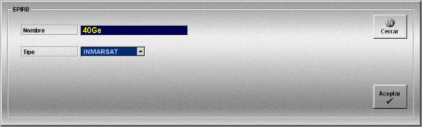

EPIRB
La creación y edición de modelos de EPIRB se realiza mediante la siguiente ventana.

Esta ventana permite al instructor definir los modelos de EPIRB que estarán disponibles para las unidades que intervienen en el simulador.
Para cada modelo de EPIRB se definen los siguientes datos:
Nombre: Nombre del modelo.
Formato: caracteres alfanuméricos.
Tipo: Tipo de EPIRB. Puede tomar los siguientes valores: